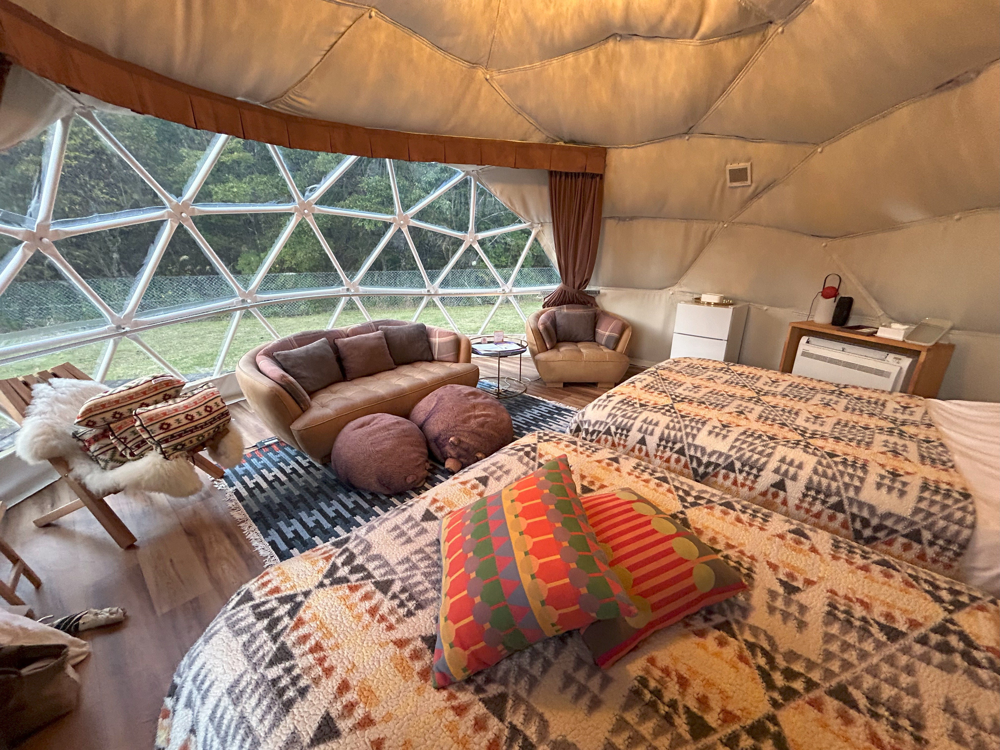
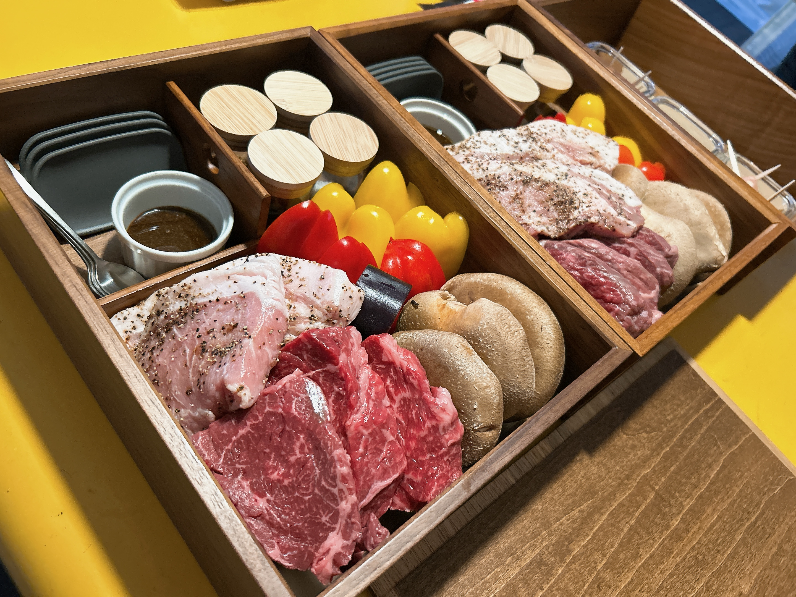
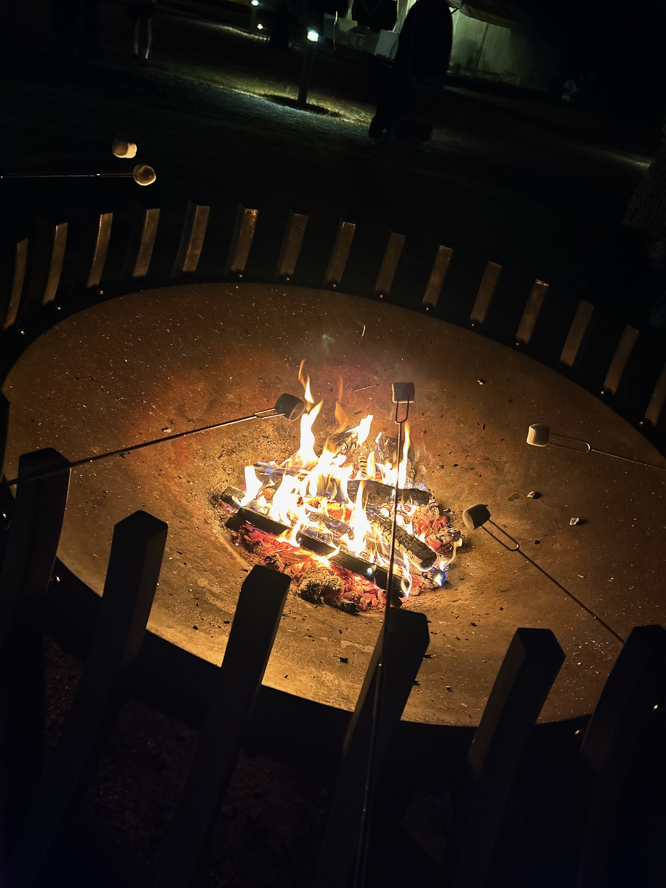

岐阜県 中津川市 Vlog
１泊２日で楽しむ恵那峡とホコグランピング
自然の中に溶け込んで、日々のストレスをリフレッシュ
とある大学生が、１泊２日で岐阜県中津川市に行ってきました！
今回は、中でも印象に残った２つの観光スポットをベストショットと一緒に紹介。
「恵那峡」から見える青い山脈
橋の上から青い山々や川が見れる！遊覧船で解説をじっくり聞きながら実際に川を渡ることもできちゃいます。

「ホコグランピング」で、優雅に大自然を味わう
星空の下で、キャンプファイヤーやバーベキューをしながら非日常体験！綺麗なお部屋で、ゆっくり体を休められます。


